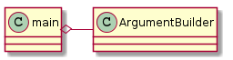

The Main Entry Point¶
This module bundles together the components needed to use the The Ape as a command-line command.


Etymology from google
- main (adj.)
- early 13c., “large, bulky, strong,” from Old English maegen - “power, strength, force,” used in compounds (e.g. maegensibb “great love”, maegensbyrden “heavy burden”). Probably also from or influenced by Old Norse megenn (adj.) “strong, powerful.” Sense of “chief” is c.1400. Main course in the meal sense attested from 1829. Main man “favorite male friend; hero” is from 1967, U.S. black slang.
| enable_debugging(args) | Enables interactive debugging |
| main() | The ‘site-entry’ point. |